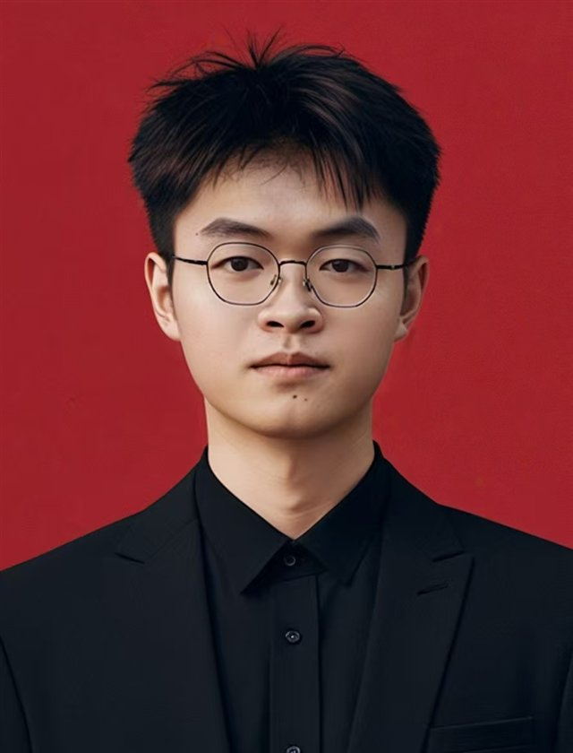

<!DOCTYPE html>
<html lang="zh-CN">
<head>
<meta charset="UTF-8">
<meta name="viewport" content="width=device-width, initial-scale=1.0">
<title>彭淼 · 个人主页</title>
<meta name="description" content="彭淼，贵阳信息科技学院计算机科学与技术专业，求职意向：大学生志愿服务西部计划·服务乡村建设专项（贵州威宁）。">
<link rel="stylesheet" href="https://miaoda.feishu.cn/fonts/css2?family=Noto+Serif+SC:wght@400;600;700&family=Noto+Sans+SC:wght@300;400;500;700&display=swap">
<style>
:root{
  --navy:#0E2C4B; --navy-2:#163A5F; --ink:#16202B; --muted:#5A6A7A;
  --line:#DFE6EE; --bg:#FBFCFF; --tint:#F1F5FA; --accent:#B5462F;
  --serif:"Noto Serif SC","Songti SC","SimSun",serif;
  --sans:"Noto Sans SC","PingFang SC","Microsoft YaHei",sans-serif;
}
*{margin:0;padding:0;box-sizing:border-box}
html{scroll-behavior:smooth}
body{font-family:var(--sans);color:var(--ink);background:var(--bg);line-height:1.75;-webkit-font-smoothing:antialiased}
.wrap{max-width:1180px;margin:0 auto;padding:0 40px}
a{color:inherit}

header{position:sticky;top:0;z-index:50;background:rgba(251,252,255,.92);
  backdrop-filter:saturate(1.4) blur(10px);border-bottom:1px solid var(--line)}
.nav{display:flex;align-items:center;justify-content:space-between;height:66px;gap:20px}
.brand{display:flex;align-items:baseline;gap:12px;flex-wrap:wrap}
.brand strong{font-family:var(--serif);font-size:19px;letter-spacing:.18em;color:var(--navy)}
.brand span{font-size:12.5px;color:var(--muted);letter-spacing:.06em}
nav ul{display:flex;gap:24px;list-style:none;flex-wrap:wrap}
nav a{font-size:13.5px;color:var(--muted);text-decoration:none;letter-spacing:.04em;
  padding-bottom:3px;border-bottom:1px solid transparent;transition:.22s}
nav a:hover{color:var(--navy)}
nav a.on{color:var(--navy);border-bottom-color:var(--accent)}

.hero{padding:74px 0 58px;border-bottom:1px solid var(--line)}
.hero-grid{display:grid;grid-template-columns:1.35fr .85fr;gap:64px;align-items:start}
.eyebrow{display:inline-flex;align-items:center;gap:10px;font-size:12.5px;letter-spacing:.16em;color:var(--muted);margin-bottom:24px}
.eyebrow::before{content:"";width:26px;height:2px;background:var(--accent)}
h1{font-family:var(--serif);font-weight:700;font-size:52px;line-height:1.28;color:var(--navy);letter-spacing:.02em}
h1 em{font-style:normal;color:var(--accent)}
.sub{font-family:var(--serif);font-size:23px;color:var(--navy-2);margin-top:6px;letter-spacing:.04em}
.lead{margin-top:24px;font-size:14.5px;color:var(--muted);max-width:560px}
.intent{margin-top:28px;display:flex;flex-wrap:wrap;gap:10px}
.tag{font-size:12.5px;color:var(--navy);background:#fff;border:1px solid var(--line);padding:6px 13px;letter-spacing:.03em}
.tag.hot{border-color:rgba(181,70,47,.35);color:var(--accent);background:#FDF6F4}

.profile{background:#fff;border:1px solid var(--line);box-shadow:0 26px 54px -36px rgba(14,44,75,.45);overflow:hidden}
.portrait{height:392px;background:var(--tint);overflow:hidden}
.portrait img{width:100%;height:100%;object-fit:cover;object-position:center 8%;display:block}
.pname{font-family:var(--serif);font-size:21px;color:var(--navy);font-weight:600;letter-spacing:.12em;padding:16px 22px 0}
.prole{font-size:11.5px;color:var(--muted);letter-spacing:.04em;padding:4px 22px 14px;border-bottom:1px solid var(--line)}
.profile .cap{font-size:10.5px;letter-spacing:.2em;color:var(--muted);margin:14px 22px 12px}
.profile .grid{display:grid;grid-template-columns:1fr 1fr;gap:16px 14px;padding:0 22px}
.stat b{display:block;font-family:var(--serif);font-size:26px;line-height:1.2;color:var(--navy)}
.stat b i{font-style:normal;font-size:13px;margin-left:2px;color:var(--muted)}
.stat p{font-size:11.5px;color:var(--muted);margin-top:3px;letter-spacing:.04em}
.profile .foot{margin-top:18px;padding:12px 22px 16px;border-top:1px solid var(--line);font-size:11px;color:var(--muted)}

section{padding:66px 0}
.sec-head{display:flex;align-items:flex-end;justify-content:space-between;gap:24px;
  padding-bottom:18px;border-bottom:1px solid var(--line);margin-bottom:36px}
.sec-head .no{font-size:12px;letter-spacing:.2em;color:var(--accent);margin-bottom:8px}
.sec-head h2{font-family:var(--serif);font-size:30px;font-weight:600;color:var(--navy);letter-spacing:.03em}
.sec-head p{font-size:13px;color:var(--muted);max-width:430px;text-align:right}

.course-grid{display:grid;grid-template-columns:repeat(3,1fr);gap:22px}
.course{background:#fff;border:1px solid var(--line);padding:24px;height:100%;transition:transform .25s,box-shadow .25s,border-color .25s}
.course:hover{transform:translateY(-4px);box-shadow:0 18px 34px -24px rgba(14,44,75,.45);border-color:#C9D6E4}
.course .k{font-size:11.5px;letter-spacing:.16em;color:var(--accent);margin-bottom:12px}
.course h3{font-family:var(--serif);font-size:17px;color:var(--navy);font-weight:600;margin-bottom:16px}
.pills{display:flex;flex-wrap:wrap;gap:7px;margin-bottom:18px}
.pill{font-size:12.5px;padding:4px 10px;background:var(--tint);color:var(--navy-2)}
.map{font-size:12.5px;color:var(--muted);padding-top:14px;border-top:1px dashed var(--line)}
.map em{font-style:normal;color:var(--accent)}

.skill-grid{display:grid;grid-template-columns:repeat(3,1fr);gap:22px}
.skill{background:#fff;border:1px solid var(--line);padding:26px 24px;height:100%}
.skill .bar{height:3px;width:44px;background:var(--navy);margin-bottom:18px}
.skill.back .bar{background:var(--accent)}
.skill h3{font-family:var(--serif);font-size:16.5px;color:var(--navy);margin-bottom:4px}
.skill .en{font-size:11px;letter-spacing:.14em;color:#93A2B2;margin-bottom:16px}
.skill ul{list-style:none;font-size:13px;color:#3D4B5A}
.skill li{padding:7px 0;border-bottom:1px solid #F2F5F9;display:flex;gap:9px}
.skill li:last-child{border-bottom:0}
.skill li::before{content:"";width:5px;height:5px;background:#B9C6D4;margin-top:9px;flex:0 0 5px}

.timeline{position:relative;padding-left:26px}
.timeline::before{content:"";position:absolute;left:6px;top:4px;bottom:4px;width:1px;background:var(--line)}
.item{position:relative;padding-bottom:30px}
.item::before{content:"";position:absolute;left:-25px;top:8px;width:9px;height:9px;background:#fff;border:2px solid var(--navy);border-radius:50%}
.item h3{font-family:var(--serif);font-size:17px;color:var(--navy);letter-spacing:.02em}
.item .meta{font-size:12px;color:var(--accent);letter-spacing:.08em;margin:5px 0 8px}
.item p{font-size:13px;color:#4A5867;max-width:900px}

.project{display:grid;grid-template-columns:1.25fr .75fr;gap:34px;align-items:start}
.pcard{background:#fff;border:1px solid var(--line);padding:32px}
.pcard .tagline{font-size:11.5px;letter-spacing:.16em;color:var(--accent);margin-bottom:12px}
.pcard h3{font-family:var(--serif);font-size:22px;color:var(--navy);margin-bottom:14px}
.pcard p{font-size:13.5px;color:#485666;margin-bottom:18px}
.pcard .role{display:grid;gap:9px;font-size:13px;color:var(--navy-2)}
.pcard .role span{display:flex;gap:10px}
.pcard .role span::before{content:"—";color:#B9C6D4}
.impact{display:grid;gap:14px}
.impact div{background:var(--tint);padding:18px 20px;border-left:2px solid var(--navy)}
.impact b{font-family:var(--serif);font-size:24px;color:var(--navy);display:block}
.impact p{font-size:12px;color:var(--muted)}
.note{font-size:11.5px;color:#8C9AA8;margin-top:10px;line-height:1.7}

.awards{display:flex;flex-wrap:wrap;gap:10px;margin-top:32px}
.award{font-size:12.5px;padding:8px 13px;border:1px solid var(--line);background:#fff;color:var(--navy-2)}
.award b{color:var(--accent);font-weight:500}

footer{background:var(--navy);color:#C3D2E0;padding:44px 0 40px}
footer .f1{display:flex;justify-content:space-between;gap:24px;flex-wrap:wrap;align-items:flex-end}
footer h4{font-family:var(--serif);font-size:19px;color:#fff;font-weight:600;letter-spacing:.06em}
footer p{font-size:12.5px;color:#9FB4C8;margin-top:10px;letter-spacing:.03em}
footer .f2{margin-top:26px;padding-top:18px;border-top:1px solid rgba(255,255,255,.14);font-size:11.5px;color:#8CA0B4}

.reveal{opacity:0;transform:translateY(18px);transition:opacity .7s ease,transform .7s ease}
.reveal.in{opacity:1;transform:none}

@media(max-width:960px){
  .wrap{padding:0 24px}
  .hero-grid,.project{grid-template-columns:1fr;gap:32px}
  h1{font-size:38px}
  .course-grid,.skill-grid{grid-template-columns:1fr}
  nav ul{gap:14px}
  nav a{font-size:12px}
  nav{height:auto;padding:14px 0;flex-wrap:wrap}
  .sec-head{flex-direction:column;align-items:flex-start;gap:8px}
  .sec-head p{text-align:left}
}
</style>
</head>
<body>

<header>
  <div class="wrap nav">
    <div class="brand"><strong id="brandName"></strong><span id="brandSub"></span></div>
    <nav><ul id="navList"></ul></nav>
  </div>
</header>

<main>
  <div class="hero">
    <div class="wrap hero-grid">
      <div>
        <div class="eyebrow" id="heroEyebrow"></div>
        <h1 id="heroTitle"></h1>
        <p class="sub" id="heroSub"></p>
        <p class="lead" id="heroLead"></p>
        <div class="intent" id="heroTags"></div>
      </div>
      <aside class="profile">
        <div class="portrait"></div>
        <div class="pname" id="profileName"></div>
        <div class="prole" id="profileRole"></div>
        <div class="cap" id="statsCap"></div>
        <div class="grid" id="statsGrid"></div>
        <div class="foot" id="statsFoot"></div>
      </aside>
    </div>
  </div>

  <section id="intent"></section>
  <section id="course" style="background:var(--tint)"></section>
  <section id="skill"></section>
  <section id="exp" style="background:var(--tint)"></section>
  <section id="project"></section>
</main>

<footer>
  <div class="wrap">
    <div class="f1">
      <div>
        <h4 id="footSlogan"></h4>
        <p id="footSign"></p>
      </div>
      <p id="footIntent"></p>
    </div>
    <div class="f2" id="footNote"></div>
  </div>
</footer>

<script>
/* ==========================================================================
   ① 编辑区：以后只改这里。改完保存、提交，网站会自动更新。
   文字里不要用 < > 尖括号，其他符号正常写。
   ========================================================================== */
const 站点 = {

  姓名: '彭淼',
  副标题: '贵阳信息科技学院 · 计算机科学与技术 · 2027 届',
  照片说明: '计算机科学与技术 · 2027 届 · 共青团员',
  学院: '信息工程学院 · 计算机科学与技术',

  大标题前: '以数字技术',
  大标题后: '扎根乡土',
  一句话: '做乡村振兴的青年答卷人',
  简介: '四年里我只做了三件事：写代码、跑村子、带团队。它们最后指向同一个方向——把数字能力带到县域产业最需要它的地方。',

  标签: [
    { 文字: '西部计划 · 服务乡村建设专项', 类型: '重点' },
    { 文字: '意向地区：贵州威宁', 类型: '普通' },
    { 文字: '2027 年 6 月毕业', 类型: '普通' },
    { 文字: '共青团员', 类型: '普通' }
  ],

  亮点标题: '四年 · 可核验的经历',
  亮点: [
    { 数值: '1500', 单位: '+', 说明: '社团管理人数' },
    { 数值: '3714', 单位: '', 说明: '服务同学' },
    { 数值: '6000', 单位: '+', 说明: '志愿服务人次' },
    { 数值: '10', 单位: '+', 说明: '省级奖项' }
  ],
  亮点脚注: '两段基层实习 · 两个校级学生组织负责人',

  栏目: [
    { 名称: '求职意向', 锚点: 'intent' },
    { 名称: '主修课程', 锚点: 'course' },
    { 名称: '数字技能', 锚点: 'skill' },
    { 名称: '实践经历', 锚点: 'exp' },
    { 名称: '项目成果', 锚点: 'project' }
  ],

  意向: {
    序号: '01 / OBJECTIVE',
    标题: '求职意向',
    说明: '目标明确到岗位与地区，路径拆到年。',
    阶段: [
      { 标题: '近期 · 服务起步（1—2 年）', 角色: '入选西部计划 · 威宁乡镇及以下基层单位',
        内容: '参与农业科技推广、农村电商、防返贫动态监测与数字工具普及，完成从学生到基层志愿者的转变。' },
      { 标题: '中期 · 业务骨干（3—5 年）', 角色: '县域乡村产业与数字乡村',
        内容: '协助特色农产品品牌打造与产销对接，用数字化手段解决基层实际问题。' },
      { 标题: '长期 · 扎根成长', 角色: '复合型乡村振兴人才',
        内容: '懂技术、懂基层、懂群众，扎根本地持续发展，把个人成长融入家乡产业发展。' }
    ]
  },

  课程: {
    序号: '02 / COURSEWORK',
    标题: '主修课程 · 与岗位能力的对应',
    说明: '不列分数，只说明每门课到了岗位上能换成什么能力。',
    分组: [
      { 分类: '编程与实现', 标题: '从语法到能跑起来的程序',
        课程: ['C 语言编程', 'Java 实用教程', 'Python 语言设计'],
        能力: '数据整理与脚本处理', 能力强调: '前端实现与功能落地' },
      { 分类: '系统与硬件', 标题: '看得懂系统，也摸得着设备',
        课程: ['计算机操作系统', '模拟电子技术', '数字电子技术基础'],
        能力: '系统思维与设备网络基础', 能力强调: '信息化不停在软件层' },
      { 分类: '数理与建模', 标题: '让判断有依据，让数据有口径',
        课程: ['概率论与数理统计', '线性代数', '复变函数与积分变换'],
        能力: '统计口径与数据分析', 能力强调: '监测台账能看出真问题' }
    ],
    补充: '另有大学物理、大学英语等基础课程，长期支撑技术阅读与英文资料查阅。'
  },

  技能: {
    序号: '03 / SKILLS',
    标题: '数字技能',
    说明: '如实分三档：能独立做的、自学掌握的、正在补的。',
    分组: [
      { 标题: '可独立完成', 英文: 'INDEPENDENT', 强调: false,
        条目: ['前端网页开发，可独立完成网页项目', '活动策划与方案落地', '公开路演与表达',
               '视频拍摄剪辑、公众号排版与发布', '办公软件与数据整理'] },
      { 标题: '自学掌握', 英文: 'SELF-TAUGHT', 强调: false,
        条目: ['AIGC 工具：辅助调研整理、文案撰写与内容生产', 'ComfyUI 本地工作流搭建',
               '开源大模型部署与调用', '图像生成与风格化创作'] },
      { 标题: '正在补强', 英文: 'IN PROGRESS', 强调: true,
        条目: ['后端开发（Spring Boot 技术路线）', '数据库设计与 SQL 实务', '基层公文写作',
               '计划在服务期前完成针对性训练'] }
    ]
  },

  经历: {
    序号: '04 / EXPERIENCE',
    标题: '实践经历',
    说明: '两段基层、两个学生组织，做的都是“把事办成”。',
    条目: [
      { 标题: '村级基层实习 · 大方县金鸡村村委会', 角色: '支书助理',
        内容: '村务整理、信息统计、政策宣传与群众服务。第一次知道一份台账背后是多少户人家的实际处境。' },
      { 标题: '街道基层实习 · 黔西市莲城街道办事处', 角色: '实习助理',
        内容: '台账整理、数据录入、文件归档与政策宣传，熟悉基层单位的信息流转方式。' },
      { 标题: '创新创业协会', 角色: '会长 · 管理 1500+ 人',
        内容: '社团连续两年获评校级最佳社团、五星社团；公众号推文阅读破万；连办三届校级创新创业挑战赛。' },
      { 标题: '信息工程学院学生会', 角色: '执行主席 · 服务 3714 名同学',
        内容: '组织公益志愿活动 10 余场、6000+ 人次；带队获校级优秀团组织、优秀志愿者队伍；培育部员 10 余名，带队获省级奖项 10 余项、校级 30 余项。' }
    ]
  },

  项目: {
    序号: '05 / PROJECTS',
    标题: '项目成果',
    说明: '拿结果说话，也说清楚哪些结果是团队的。',
    案例: {
      标签: '典型案例 · 乡村振兴赛道',
      标题: '荞帮主 · 威宁苦荞科技助农',
      简介: '围绕威宁地标作物苦荞做深加工产品开发与品牌化，探索特色农产品“怎么卖出去”的路径。',
      角色: ['市场方向核心成员：市场调研、用户与竞品数据整理分析',
             '项目路演人：现场宣讲与答辩',
             '输出可迁移能力：调研分析、公开表达、助农逻辑认知'],
      备注: '项目成效为团队口径；个人承担的是调研、数据分析与路演部分。'
    },
    数据: [
      { 数值: '2 倍', 说明: '带动农户收入增长（项目口径）' },
      { 数值: '60 人', 说明: '直接就业' },
      { 数值: '100 人', 说明: '间接就业' }
    ],
    奖项: [
      { 前: '2025 贵州省中国国际大学生创新大赛 ', 强调: '省级银奖' },
      { 前: '中国国际大学生创新大赛贵州省赛 ', 强调: '铜奖多项' },
      { 前: '“挑战杯”贵州省创业计划竞赛 ', 强调: '省二、省三各 1 项' },
      { 前: '', 强调: '校级二等奖、三等奖' },
      { 前: '2024—2025 年度 ', 强调: '双创优秀工作者' },
      { 前: '参与设计并授权 ', 强调: '外观专利 1 项' }
    ]
  },

  页脚: {
    口号: '把技术用到乡土上，把青春留在乡野间',
    署名: '彭淼 · 贵阳信息科技学院信息工程学院 · 计算机科学与技术 · 2027 届',
    意向: '求职意向：西部计划 · 服务乡村建设专项｜贵州威宁',
    备注: '本页为个人求职展示页面，联系方式与证明材料详见个人简历。'
  }
};

/* ==========================================================================
   ② 渲染代码：一般不用改。要加板块请找懂代码的人。
   ========================================================================== */

document.getElementById('brandName').textContent = 站点.姓名;
document.getElementById('brandSub').textContent = 站点.副标题;
document.getElementById('profileName').textContent = 站点.姓名;
document.getElementById('profileRole').textContent = 站点.照片说明;

document.getElementById('navList').innerHTML = 站点.栏目
  .map((c, i) => `<li><a href="#${c.锚点}"${i === 0 ? ' class="on"' : ''}>${c.名称}</a></li>`).join('');

document.getElementById('heroEyebrow').textContent = 站点.学院;
document.getElementById('heroTitle').innerHTML = `${站点.大标题前}<em>${站点.大标题后}</em>`;
document.getElementById('heroSub').textContent = 站点.一句话;
document.getElementById('heroLead').textContent = 站点.简介;
document.getElementById('heroTags').innerHTML = 站点.标签
  .map(t => `<span class="tag${t.类型 === '重点' ? ' hot' : ''}">${t.文字}</span>`).join('');

document.getElementById('statsCap').textContent = 站点.亮点标题;
document.getElementById('statsGrid').innerHTML = 站点.亮点
  .map(s => `<div class="stat"><b>${s.数值}<i>${s.单位}</i></b><p>${s.说明}</p></div>`).join('');
document.getElementById('statsFoot').textContent = 站点.亮点脚注;

const secHead = (d) => `
  <div class="sec-head reveal">
    <div><div class="no">${d.序号}</div><h2>${d.标题}</h2></div>
    <p>${d.说明}</p>
  </div>`;

document.getElementById('intent').innerHTML = `<div class="wrap">
  ${secHead(站点.意向)}
  <div class="timeline reveal">
    ${站点.意向.阶段.map(s => `
      <div class="item">
        <h3>${s.标题}</h3>
        <div class="meta">${s.角色}</div>
        <p>${s.内容}</p>
      </div>`).join('')}
  </div>
</div>`;

document.getElementById('course').innerHTML = `<div class="wrap">
  ${secHead(站点.课程)}
  <div class="course-grid">
    ${站点.课程.分组.map(g => `
      <article class="course reveal">
        <div class="k">${g.分类}</div>
        <h3>${g.标题}</h3>
        <div class="pills">${g.课程.map(c => `<span class="pill">${c}</span>`).join('')}</div>
        <div class="map">对应能力：${g.能力}${g.能力强调 ? `，<em>${g.能力强调}</em>` : ''}</div>
      </article>`).join('')}
  </div>
  <p class="note reveal">${站点.课程.补充}</p>
</div>`;

document.getElementById('skill').innerHTML = `<div class="wrap">
  ${secHead(站点.技能)}
  <div class="skill-grid">
    ${站点.技能.分组.map(g => `
      <article class="skill reveal${g.强调 ? ' back' : ''}">
        <div class="bar"></div>
        <h3>${g.标题}</h3>
        <div class="en">${g.英文}</div>
        <ul>${g.条目.map(i => `<li>${i}</li>`).join('')}</ul>
      </article>`).join('')}
  </div>
</div>`;

document.getElementById('exp').innerHTML = `<div class="wrap">
  ${secHead(站点.经历)}
  <div class="timeline">
    ${站点.经历.条目.map(e => `
      <div class="item reveal">
        <h3>${e.标题}</h3>
        <div class="meta">${e.角色}</div>
        <p>${e.内容}</p>
      </div>`).join('')}
  </div>
</div>`;

document.getElementById('project').innerHTML = `<div class="wrap">
  ${secHead(站点.项目)}
  <div class="project">
    <article class="pcard reveal">
      <div class="tagline">${站点.项目.案例.标签}</div>
      <h3>${站点.项目.案例.标题}</h3>
      <p>${站点.项目.案例.简介}</p>
      <div class="role">${站点.项目.案例.角色.map(r => `<span>${r}</span>`).join('')}</div>
      <p class="note">${站点.项目.案例.备注}</p>
    </article>
    <div class="impact reveal">
      ${站点.项目.数据.map(d => `<div><b>${d.数值}</b><p>${d.说明}</p></div>`).join('')}
    </div>
  </div>
  <div class="awards reveal">
    ${站点.项目.奖项.map(a => `<span class="award">${a.前}<b>${a.强调}</b></span>`).join('')}
  </div>
</div>`;

document.getElementById('footSlogan').textContent = 站点.页脚.口号;
document.getElementById('footSign').textContent = 站点.页脚.署名;
document.getElementById('footIntent').textContent = 站点.页脚.意向;
document.getElementById('footNote').textContent = 站点.页脚.备注;
document.title = `${站点.姓名} · 个人主页｜${站点.一句话}`;

/* 滚动进场与导航高亮 */
const io = new IntersectionObserver((entries) => {
  entries.forEach(e => { if (e.isIntersecting) { e.target.classList.add('in'); io.unobserve(e.target); } });
}, { threshold: .12 });
document.querySelectorAll('.reveal').forEach(el => io.observe(el));

const links = [...document.querySelectorAll('nav a')];
const blocks = [...document.querySelectorAll('section, .hero')];
const navIO = new IntersectionObserver((entries) => {
  entries.forEach(e => {
    if (e.isIntersecting) {
      const id = e.target.id || 'intent';
      links.forEach(a => a.classList.toggle('on', a.getAttribute('href') === '#' + id));
    }
  });
}, { rootMargin: '-40% 0px -55% 0px' });
blocks.forEach(b => navIO.observe(b));
</script>
</body>
</html>


